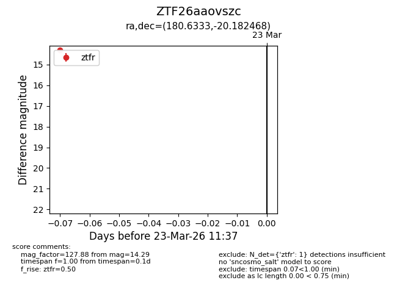
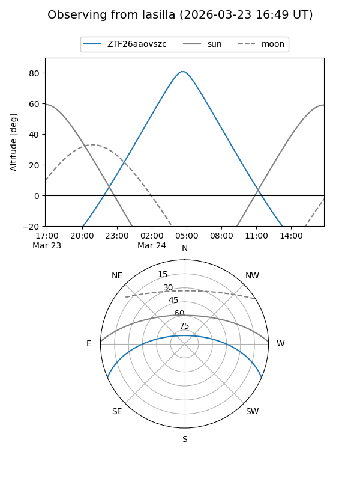
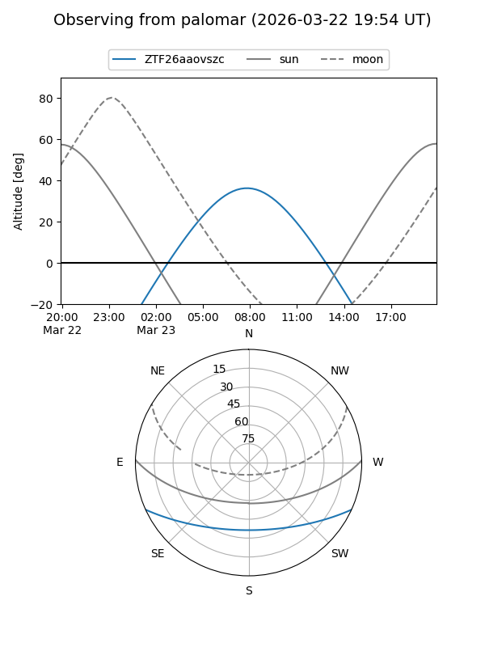

ZTF26aaovszc
Target ZTF26aaovszc at 2026-03-23 11:39
Aliases and brokers:
FINK: link
Lasair: link
ALeRCE: link
alt names
ZTF26aaovszc (ztf,fink_ztf)
Coordinates:
equatorial (ra, dec) = 180.6333,-20.18247
equatorial (HMS+DMS) = 12:02:31.98,-20:10:56.88
galactic (l, b) = (287.6069,+41.22943)
Flags:
Photometry:
last ztfr=14.29
1 ztfr detections
Lightcurve

Visibility


Additional plots